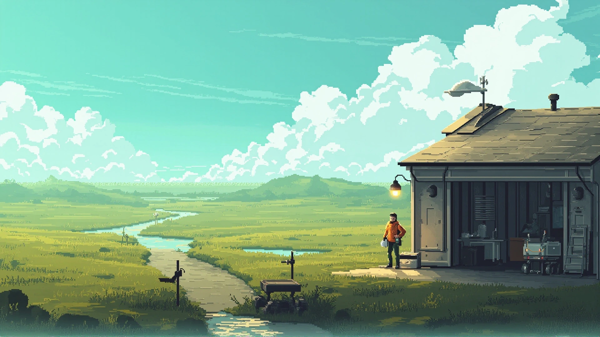
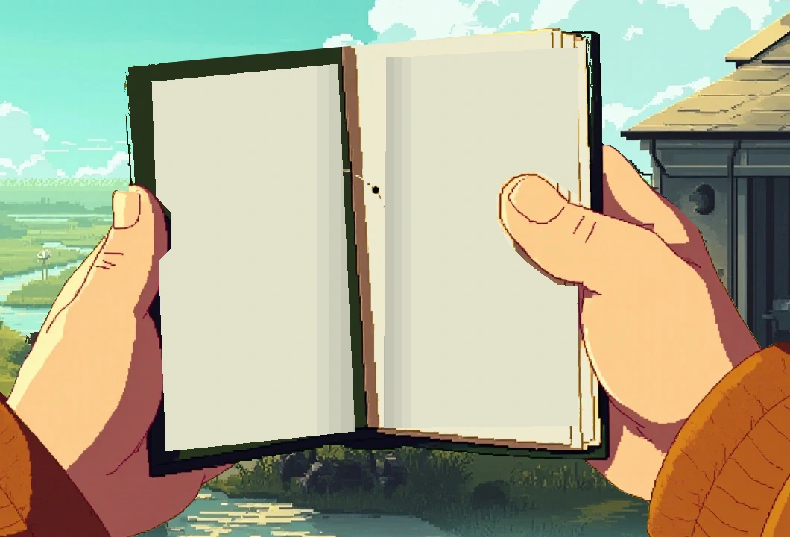
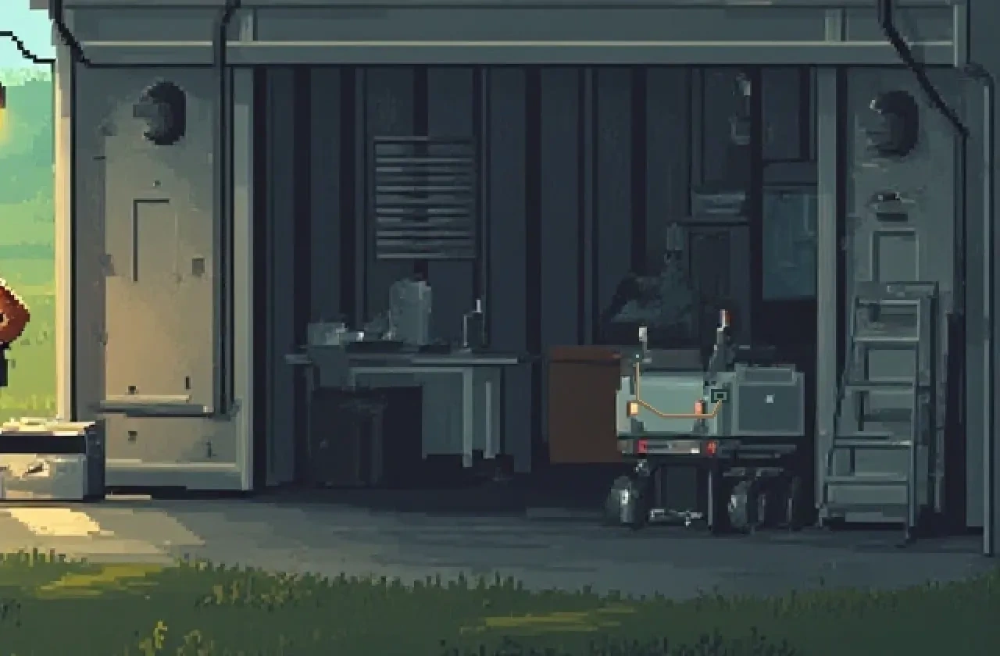
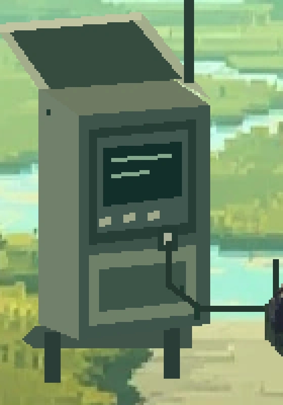
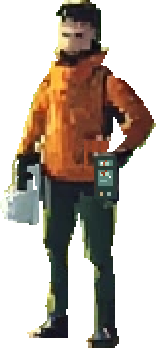
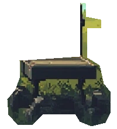

美术 → 全流程 → 可玩样片
雨后，同一路上。
先把可读内容放回手中的物件，把天气和灯光放回同一个场所。以下是第一阶段的实际制作结果与连续性试排；人物步态和新场景美术仍有缺项，尚未进入定稿。
01 / 同一地点，四种环境条件
光线改变，路仍能认出来。
保留原画建筑、道路与设备坐标。低云改变天光，傍晚改变冷暖，夜间由实体灯源分别照亮工位、墙面与湿地。它们是同构图光色研究，不是已完成的天气系统。

行动：在檐下确认目标，沿维护路去 R1。雨前缓存与当前天气分别记录。
制作：天空、屋顶、地表与局部受光分开处理；夜稿新增工位灯。光斑、接触阴影与低云形态仍需美术精修。
02 / 真的写进去，再检查怎样拿
每次翻开，都有新的依据。
沿用已有像素手部与封皮，重排双页纸面，文字避开拇指与书脊。初记、资料带回、坡肩续写三份内容快照可切换；纸签选择理念，上下页翻阅已有补记。这里不改变探索存档。

这次解决的是：两页都有内容、理念和经历互相对应、补记可以分页。生成图里的无字点线已经退出阅读内容。
仍需解决：原前景的手部线条偏概括，纸面和手的接触需要重新绘制；此合成不作为完成的持书动画。窄屏下分开显示原画和可读内容，检查文字本身。
03 / 同一来路，逐步展开
从工位，到最后一个有依据的点。
先用原画坐标锁住站房—维护路—R1 的关系。R1 柜体以原画调色板作像素结构试绘，载体直接取自原画；远景沿用上一组像素候选并修正草地色温。接近草坡、遮挡、展开的连续新机位尚缺，失败的前景拼接已撤下。
- 01 / 檐下工位接委托、留旧缓存，工具收妥后出发。
- 02 / R1 近岸在雨罩下连接本地端口，留采集来源。
- 03 / 返回工位采用范围到 R1，原记录保留。
- 04 / 坡肩越过遮挡后看远路，反光仍未测量。

设备入口 / 端口与资料状态
机器从实体设备进入资料束。
雨罩、插口、短线和低亮屏幕交代资料如何取得。完整档案按需展开；小屏只承担来源与当前状态。
此处是原画世界中的像素结构试绘，尚待细化金属体积与接线接触。

T01 / R1本地读取等待带回
04 / 身份与朝向
固定朝向，再验证负重步态。
人物身份继续取自原画与已有视频。逐帧复核后，原先误标的侧面和背侧已纠正：朝左侧面取第 96 帧、朝左背侧取第 48 帧、背面取第 84 帧。它们只作造型参照，仍无合格步态。


当前动作制作：源动作—目标骨架—实际模型同步对照。已重建无负重动作转移基准，人物美术、持物与负重行走尚未通过。旧通路样片与 05、06、balance01 保留为历史试验，均未接正式首页；查看失败记录 06。
早期方法试验：完整二维像素人物试片 · PIXEL 04、三维母版 02、母版 01、旧站姿试验、旧动作小样保留供检查，均未作为已认可的人物成品。
目前没有已通过的人物行走资产。既有补绘与绑定未解决完整形体和连续动作；转身参照中的衣身、面容和器物轮廓也有变化。前批生成角色表已拒用；本轮没有新生成请求。
本轮四次生成的取舍与后续缺项
持书：偏摄影，拒用。R1：柜体关系可参考，但载体偏重、远处多塔，未采用。坡肩：偏平滑三维、路径和设备尺度偏离，拒用。角色表：衣装、装备、姿态数量与像素风格偏移，拒用。实际输入与原始结果记于来源清单，不继续消耗图片额度试运气。
进入第二阶段前还需补齐：与原画同风格的 R1 和坡肩完整美术、自然的持握重绘，以及至少一个通过朝向和承重检查的步态循环。本页有用的局部结果可继续复用，不能据此宣称美术已定稿。